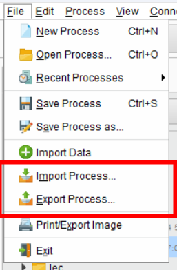
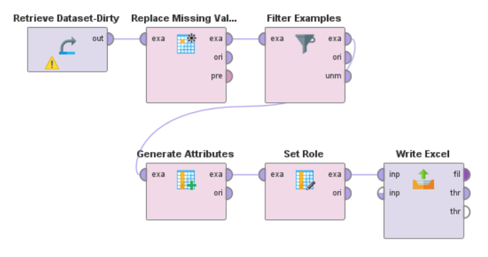
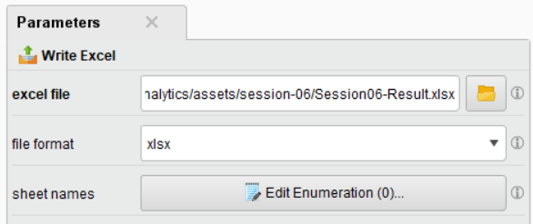

Import and Export
Note
Jangan lupa untuk save process yang sudah kita buat sebelumnya. Klik kanan pada node “res”, lalu pilih “Save Process”. Tekan tombol “Save” atau CTRL + S untuk menyimpan proses tersebut. Lokasinya bisa diatur sesuai keinginan (biasanya di Local Repository).
Saat kita ingin share proses yang sudah kita buat, kita bisa menggunakan fitur Import dan Export. Dengan cara ini, kita bisa membagikan proses yang sudah kita lakukan kepada pihak lain, ataupun sebaliknya, kita bisa menggunakan proses yang sudah dibuat oleh orang lain.
Import & Export Process
Import/Export Process digunakan supaya kita dapat menyimpan proses yang sudah kita buat ke dalam file. File tersebut bisa kita gunakan kembali di waktu yang akan datang. Untuk melakukannya, kita dapat memilih File -> Import / Export Process.
{kind=link}
Note
Export Process akan menyimpan proses yang sudah kita buat ke dalam file dengan extension .rmp . Jika kita Save Process (Ctrl + S), maka proses tersebut akan disimpan di dalam Local Repository.
Secara default, Local Repository akan berada di C:/Users/username/Documents/RapidMiner/Local Repository.
Save Result to File
Selain kita bisa menyimpan process, kita juga dapat menyimpan hasil dari process yang sudah kita buat. Untuk melakukannya, kita dapat menggunakan node “Write CSV” atau “Write Excel”.
Sebagai contoh, kita akan menyimpannya di file Excel. Jadi tarik node “Write Excel” ke dalam process kita, lalu hubungkan dengan proses kita sebelumnya.
{kind=link}
Setelah itu, kita dapat mengatur konfigurasi dari node “Write Excel” tersebut. Kita dapat mengatur lokasi penyimpanan file, nama file, file format, dll.
{kind=link}
Note
Ubah lokasi excel file ke tempat yang kamu inginkan
Jika sudah selesai, tekan tombol “Run”, maka hasil dari process kita akan disimpan di dalam file Excel tersebut. (Contoh: File Output)